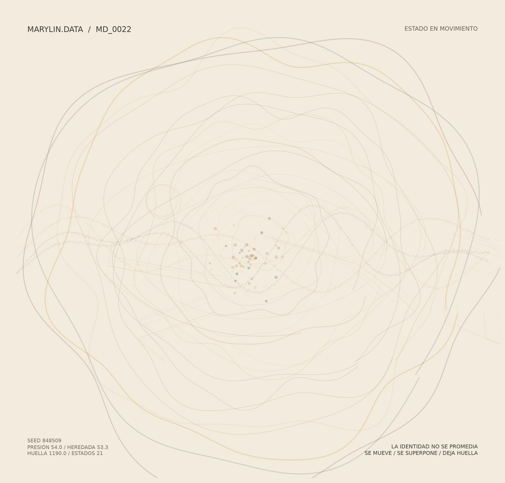

¿Cómo representar una identidad que nunca deja de cambiar?

¿Cómo representar una identidad que nunca deja de cambiar?
Durante mucho tiempo intenté responder esa pregunta desde la imagen, hasta comprender que una imagen fija no podía contener el proceso que la había construido. MARYLIN.DATA nace de esa decisión: construir un sistema donde la memoria pudiera seguir transformándose entre una ejecución y la siguiente.
Cada ejecución parte de un registro diario de mi experiencia, traduce esa información en variables y activa fuerzas que transforman el comportamiento de la imagen.
Registro diario ↓ Variables ↓ Fuerzas ↓ Estado de Corte
Activa la memoria y modifica el ritmo.
Incrementa la acumulación y la densidad.
Abre el campo visual y la expansión.
Generan cruces y contradicción.
Introduce pausas y vacíos.
No se corrige; queda registrado.
La pieza expuesta corresponde a un Estado de Corte: una representación del acumulado del sistema en un momento determinado.
| Código | Cambio | Resultado |
|---|---|---|
| PRE-001 | Nace la pregunta fundacional. | La imagen deja de ser suficiente. |
| DEV-001 | Primeras ejecuciones. | Registro → imagen. |
| SYS-001 | Primera figura estable. | Variables consolidadas. |
| SYS-002 | Nuevas reglas. | Relaciones internas. |
| SYS-003 | Memoria heredada. | Continuidad entre estados. |
| SYS-003.3 | Consolidación. | Estado de Corte + Archivo Vivo. |
¿Qué ocurre cuando una experiencia se convierte en dato? ¿Qué permanece cuando una imagen deja de ser una imagen y empieza a conservar memoria?